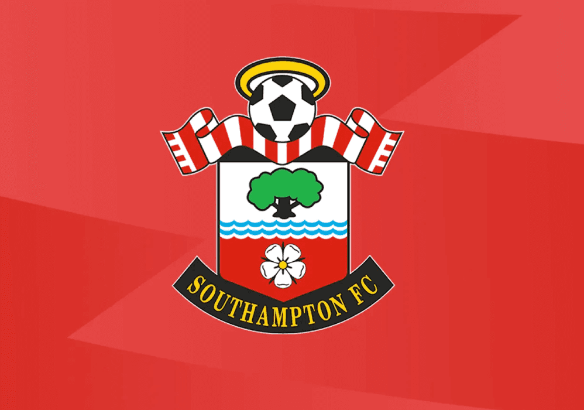

Southampton FC · Russell Martin
Drewe Broughton in partnership with Southampton FC — September 2023 to June 2024.
The Situation
When Russell Martin reached out in February 2023, he was a leader carrying the full weight of expectation. At Swansea City, the team had won just 3 of their last 18 games. The pressure was relentless. The emotional burden was heavy.
The results weren't reflecting the work, or the man leading it. Russell was on the edge — not of losing his job, but of losing himself.
This is where Drewe entered his world.
The Intervention
Drewe didn't arrive with positivity, slogans, or tactics. He entered with VASC: Vulnerability, Acceptance, Sweat & Courage — the emotional operating system that shifts leaders at soul-level.
The impact was instant. Swansea went on a 10-game unbeaten run between February and May, and four months later, Russell was appointed manager of Southampton FC.
The Journey at Southampton
When Drewe formally joined Southampton in September 2023, the club had lost 5 games in a row. The work began immediately.
Vulnerability with the leader. Acceptance of the truth. Sweat in daily habits. Courage as the only standard. This was not “mindset coaching” — it was lived work.
The Breakthrough
From September 2023 to February 2024, Southampton produced one of the greatest turnarounds in modern English football — breaking a 100-year club record, recording the highest average possession in Europe's top five leagues, and winning promotion to the Premier League.
Russell's own press conferences echoed Drewe's language every week. This wasn't borrowed language — this was lived work.
The Human Transformation
In The Telegraph, Russell opened up about his childhood, his emotional wounds, and the personal journey he was on as a man and as a leader.
VASC gave Russell a new way to lead — not through fear or pleasing, but through emotional truth and conviction.